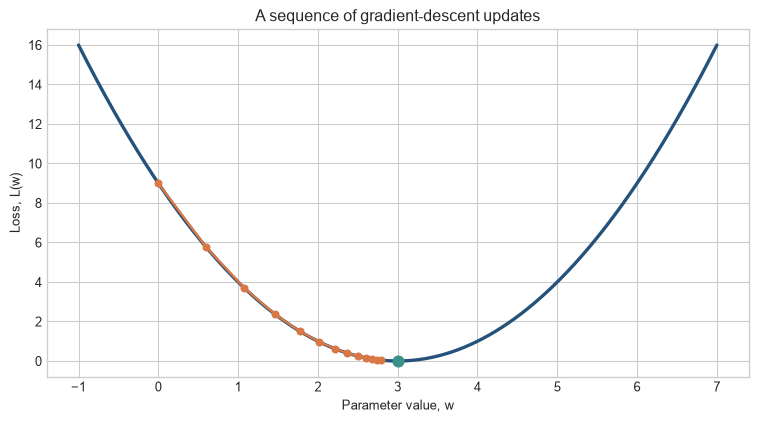
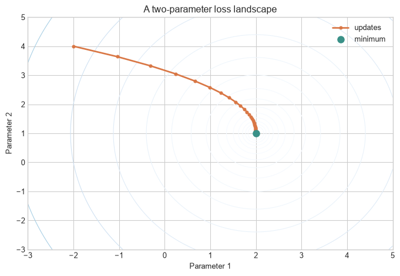
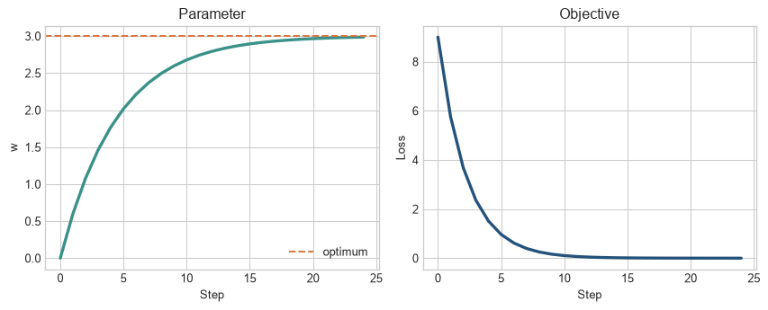

Most modern neural networks are trained through a repeated cycle of prediction, evaluation, and adjustment. The models may contain millions or billions of parameters, but the central procedure is concise: measure the loss, calculate how parameter changes would affect it, and take a controlled step in a direction expected to reduce it.
This chapter develops that idea from a physical analogy to the update rule used in software. We will use one small running example throughout: finding the value of a parameter that makes a simple prediction as accurate as possible.
Learning objectives
By the end of this chapter, you should be able to:
explain the relationship between parameters, predictions, and loss;
interpret a loss curve and an optimisation path;
explain what a gradient tells us and why the update moves against it;
implement gradient descent with NumPy and PyTorch;
diagnose the effects of different learning rates;
distinguish batch gradient descent, stochastic gradient descent, and adaptive optimisers;
explain why optimisation becomes a systems problem for large language models.
Running example
Suppose a model has one parameter, \(w\), and its error is described by:
\[
L(w) = (w - 3)^2.
\]
The best value is \(w=3\), because that makes the loss equal to zero. In a real model, the loss function is usually much more complicated and depends on thousands or billions of parameters. The one-dimensional example is useful because we can see the entire landscape rather than relying on intuition alone.
Figure 4.1: A simple loss function. The training objective is to move toward the minimum at w = 3.
The curve is the optimisation landscape. Its horizontal position represents a parameter value, and its height represents the loss produced by that value. Training changes the parameter in an attempt to move towards a low point.
Gradient descent. An optimisation procedure that changes parameters in the direction expected to reduce a stated loss locally. The gradient records how that loss changes with each parameter, and the learning rate sets the size of one update. A lower loss after an update is evidence about the specified objective, not a general guarantee about future performance.
Figure 4.2: The local slope indicates which direction lowers the loss.
The solid curve gives the loss for every possible value of the parameter in this toy problem. The dashed line is the tangent at the current value. It records the local direction of change: at the marked point, moving to the right lowers the loss. The downhill arrow is therefore determined by the slope at the current point, not by knowledge of the whole curve.
Walking downhill in fog
Imagine standing on a mountain in thick fog. You cannot see the entire landscape, and you do not know where the valley is. You can only feel the ground immediately around your feet.
To make progress, you could:
test the slope in several nearby directions;
identify the direction that goes most steeply downward;
take a small step;
repeat the process.
The mountain is the loss landscape. Your location is the current set of model parameters. The local slope is the gradient. Each small step is a parameter update.
The analogy captures both the power and the limitation of gradient descent. It is powerful because the model does not need a map of the whole landscape. It only needs local information. It is limited because local information does not guarantee that the model will find the best point in the entire landscape.
Why not make one enormous step?
If the ground slopes downward to your left, a huge leap to the left might carry you past the valley and up the other side. A small step is safer. The learning rate controls how large the step is.
A very small learning rate produces careful but slow progress.
A suitable learning rate produces stable progress.
A very large learning rate can cause the model to jump back and forth or diverge.
The objective is not to move as quickly as possible at every moment. It is to make reliable progress toward a low-loss region.
Figure 4.3: One learning step repeats prediction, loss calculation, gradient calculation, and parameter update.
The diagram separates the quantities that are often collapsed into the phrase “the model learns”. Prediction produces an output. The loss compares that output with the target. The gradient describes how parameter changes would affect the loss. The update applies a chosen step, after which the model is evaluated again. The cycle is a sequence of computations, not a single act of adjustment.
The learning cycle
For a supervised-learning problem, one training step looks like this:
The model receives input data.
Its parameters determine a prediction.
A loss function compares that prediction with the target.
The gradient measures how each parameter affects the loss.
The optimiser changes the parameters.
The cycle repeats on new examples.
The loss is therefore feedback, not an instruction. A loss of 42 tells us that the model is wrong, but it does not by itself tell us which internal parameters should change. The gradient provides that directional information.
A concrete prediction problem
Suppose the programme-uptake model predicts a continuous uptake score from one feature, such as distance to a service point. A simple model is:
\[
\hat{y}=wx+b,
\]
where \(x\) is distance, \(w\) is the learned slope, and \(b\) is the learned intercept. For a collection of households, the model produces predictions \(\hat{y}_1,\ldots,\hat{y}_n\). A common loss is the mean squared error:
The model does not “know” that a particular prediction is too high in the human sense. The loss converts the difference between prediction and target into a number that can be differentiated. Gradient descent then changes \(w\) and \(b\) together.
What a slope means locally
The derivative is a local statement. Near the current parameter value, it approximates how much the loss will change if the parameter changes slightly:
\[
L(w+\Delta w)\approx L(w)+\frac{dL}{dw}\Delta w.
\]
If the derivative is positive, a positive change in \(w\) increases the loss, so the update generally moves \(w\) downward. If the derivative is negative, increasing \(w\) tends to reduce the loss, so the update moves upward. This is why the sign matters, while the magnitude determines how strongly the algorithm responds.
What happens at a minimum?
At a smooth local minimum, the slope is zero because the curve is momentarily flat. A zero gradient is a stopping signal, not a certificate that the model is globally optimal. In one-dimensional convex problems such as the quadratic example, the distinction is harmless. In neural networks, the objective is usually non-convex and can contain many stationary points.
One parameter at a time
In the running example, start at \(w=0\). The loss is:
\[
L(0)=(0-3)^2=9.
\]
The curve slopes downward as \(w\) increases, so a sensible update should increase \(w\). After several updates, \(w\) should approach 3.
The points in the figure are the actual parameter values after successive updates. Their vertical positions are the corresponding losses. The points move closer together as they approach the minimum because the derivative becomes smaller. This is the behaviour that the update equation must produce in this example.
Code
w_values = np.linspace(-1, 7, 400)loss_values = (w_values -3) **2w =0.0learning_rate =0.1history = [w]for _ inrange(12): gradient =2* (w -3) w = w - learning_rate * gradient history.append(w)fig, ax = plt.subplots(figsize=(8, 4.5))ax.plot(w_values, loss_values, color=blue, linewidth=2.5)ax.plot(history, [(value -3) **2for value in history], marker="o", color=orange, linewidth=1.8, markersize=5)ax.scatter([3], [0], color=teal, s=65, zorder=3)ax.set_xlabel("Parameter value, w")ax.set_ylabel("Loss, L(w)")ax.set_title("A sequence of gradient-descent updates")plt.tight_layout()plt.show()

Figure 4.4: Gradient descent takes a sequence of small steps toward the minimum.
Level 3 - Mathematics & Code
The mathematical treatment makes the downhill analogy precise. We first define a loss as a function of a parameter, calculate its derivative, and apply the update rule. The code repeats these steps explicitly so that each line corresponds to one part of the equation.
What is a gradient?
For a single parameter, the gradient is just the derivative:
\[
\frac{dL}{dw}.
\]
For the running example:
\[
L(w)=(w-3)^2,
\qquad
\frac{dL}{dw}=2(w-3).
\]
The derivative has two parts. The factor 2 comes from differentiating the square. The term \((w-3)\) records how far the current parameter is from the value that minimises the loss. At \(w=3\), the derivative is zero. At values below 3 it is negative; at values above 3 it is positive.
At \(w=0\), the derivative is \(-6\). The negative sign means that increasing \(w\) would reduce the loss. Gradient descent moves in the opposite direction of the derivative:
The calculation illustrates the role of the minus sign. At \(w=0\), the derivative is negative, so subtracting it increases the parameter. The learning rate scales the change: without \(\eta\), the update would be fixed at six units, which would be unnecessarily large for this example. The update uses the derivative to choose a direction and the learning rate to choose a distance.
A full worked update
Let \(w_0=0\) and \(\eta=0.1\). The first three iterations are:
Step
\(w_t\)
\(L(w_t)\)
\(dL/dw\)
\(w_{t+1}\)
0
0.000
9.000
-6.000
0.600
1
0.600
5.760
-4.800
1.080
2
1.080
3.686
-3.840
1.464
The updates become smaller as \(w\) approaches 3 because the derivative approaches zero. For this particular quadratic, the recurrence can be written directly:
\[
w_{t+1}=w_t-2\eta(w_t-3).
\]
Rearranging around the optimum gives:
\[
w_{t+1}-3=(1-2\eta)(w_t-3).
\]
This equation makes the learning-rate constraint visible. For \(0<\eta<1\), the distance from the optimum shrinks in magnitude. When \(\eta=1\), the next step jumps across the optimum by the same distance. When \(\eta>1\), the distance grows and the algorithm diverges for this example.
Two parameters and a contour plot
With two parameters, the loss is a surface rather than a curve. A contour plot shows equal-loss lines from above. The gradient points perpendicular to the contour passing through the current point, toward the direction of steepest increase. The update travels in the opposite direction.
Code
u = np.linspace(-3, 5, 250)v = np.linspace(-3, 5, 250)U, V = np.meshgrid(u, v)surface = (U -2) **2+0.5* (V -1) **2point = np.array([-2.0, 4.0])path = [point.copy()]for _ inrange(28): grad = np.array([2* (point[0] -2), (point[1] -1)]) point = point -0.12* grad path.append(point.copy())path = np.array(path)fig, ax = plt.subplots(figsize=(7.2, 5))levels = np.geomspace(0.03, 80, 16)ax.contour(U, V, surface, levels=levels, cmap="Blues", linewidths=0.8)ax.plot(path[:, 0], path[:, 1], color=orange, marker="o", markersize=3.5, linewidth=2, label="updates")ax.scatter([2], [1], color=teal, s=70, label="minimum", zorder=3)ax.set(xlabel="Parameter 1", ylabel="Parameter 2", title="A two-parameter loss landscape")ax.legend(frameon=False)plt.tight_layout()plt.show()

Figure 4.5: In two dimensions, the gradient-descent path crosses contours toward lower loss.
Each contour represents a set of parameter combinations with the same loss. The orange path records successive updates, while the teal point marks the minimum of this constructed surface. In more complicated models the contours are not usually ellipses, but the local rule is the same: calculate the gradient at the current point and move in the opposite direction.
Finite differences: a useful diagnostic
Before trusting an automatic derivative, it is useful to understand numerical differentiation. A centred finite-difference estimate is:
Finite differences are slow for a model with millions of parameters and can become inaccurate when \(h\) is too small. Automatic differentiation uses the computational structure of the model to calculate exact derivatives up to floating-point precision, which is why it is preferred in training frameworks.
The finite-difference calculation is useful because it checks the derivative without relying on the derivative formula used in the training code. If the analytic and numerical values disagree substantially, the problem may be in the model, the loss, the implementation, or the choice of step size \(h\). A gradient check is therefore a debugging tool, not an alternative optimiser.
From one parameter to many
Real models have a parameter vector \(\theta\) rather than a single \(w\). Let \(d\) denote the number of parameters:
Every parameter receives its own directional signal. The update is:
\[
\theta_{\mathrm{new}} = \theta_{\mathrm{old}} - \eta\nabla_\theta L.
\]
NumPy implementation
The following implementation makes the update explicit. It does not use automatic differentiation, so the derivative is written by hand.
Code
w =0.0learning_rate =0.1weights, losses = [], []for step inrange(25): loss = (w -3) **2 gradient =2* (w -3) weights.append(w) losses.append(loss) w -= learning_rate * gradientfig, axes = plt.subplots(1, 2, figsize=(9, 3.7))axes[0].plot(weights, color=teal, linewidth=2.5)axes[0].axhline(3, color=orange, linestyle="--", label="optimum")axes[0].set(xlabel="Step", ylabel="w", title="Parameter")axes[0].legend(frameon=False)axes[1].plot(losses, color=blue, linewidth=2.5)axes[1].set(xlabel="Step", ylabel="Loss", title="Objective")plt.tight_layout()plt.show()

Figure 4.6: The parameter approaches the optimum while the loss falls.
The loop follows the update rule directly. It evaluates the current loss, calculates the derivative at the current parameter, and then overwrites \(w\) with the updated value. Recording the parameter and loss histories makes the learning process observable; the final value alone would not show how the algorithm reached its result.
PyTorch implementation
In practice, frameworks calculate derivatives automatically. The following code uses PyTorch’s computation graph and automatic differentiation.
Code
import torchw = torch.tensor(0.0, requires_grad=True)learning_rate =0.1for step inrange(25): loss = (w -3) **2 loss.backward()with torch.no_grad(): w -= learning_rate * w.grad w.grad.zero_()print(f"final parameter: {w.item():.3f}")print(f"final loss: {(w.item() -3) **2:.6f}")
final parameter: 2.989
final loss: 0.000128
There are two distinct operations here:
loss.backward() computes the gradient;
the subtraction inside torch.no_grad() applies the update.
This distinction becomes important in Chapter 4, which examines backpropagation.
The PyTorch loop produces the same parameter trajectory as the hand-written NumPy loop, but the derivative is obtained from the computation graph. requires_grad=True asks PyTorch to track operations involving w; loss.backward() computes the derivative; and the torch.no_grad() block applies the update without adding the update itself to the graph. Clearing w.grad matters because PyTorch accumulates gradients by default.
Learning rates and failure modes
The learning rate is not a minor implementation detail. It changes the path through the landscape.
Figure 4.7: Different learning rates produce different optimisation behaviour.
When the rate is too small, the algorithm is stable but inefficient. When it is too large, the update can overshoot the minimum repeatedly. Real training often changes the learning rate over time, using warm-up, decay, or schedules adapted to the model and batch size.
Level 4 - Research & Systems
The one-parameter example makes the update easy to see, but it hides the conditions that determine whether optimisation is practical. At this level, the relevant objects are noisy gradients, mini-batches, adaptive optimiser state, memory, communication, and the changing geometry of large neural-network objectives.
Batch and stochastic updates
Suppose the training dataset contains one million examples. Computing the exact gradient over all of them before every update would be expensive. Instead, modern training usually uses a mini-batch such as 256 examples.
Batch gradient descent uses the complete dataset for each update.
Stochastic gradient descent uses one example at a time.
Mini-batch gradient descent uses a small random subset and is the standard practical compromise.
Mini-batches make updates noisy because different samples produce different gradient estimates. This noise changes the optimisation path and can sometimes help the optimiser leave poorly performing regions, although it does not guarantee a better solution. Mini-batches also map naturally onto parallel hardware.
The stochastic-gradient perspective has a long history. Robbins and Monro formalised stochastic approximation in 1951, and stochastic-gradient methods became central to large-scale learning because they replace an expensive full-dataset gradient with an estimate based on sampled data (Robbins and Monro 1951). Bottou, Curtis, and Nocedal explain why this setting differs from classical numerical optimisation: the objective is high-dimensional, the gradients are noisy, and each update must be cheap enough to perform many times (Bottou, Curtis, and Nocedal 2018).
The mini-batch gradient is an estimator of the full gradient. Increasing the batch size usually reduces its variance, but it also increases the amount of data and memory required per update. The useful batch size is therefore a systems and statistical choice, not a universal constant.
The equation makes the source of the noise explicit: each update averages only the losses in \(B_t\), not every example in the dataset. Two different mini-batches can therefore produce different gradients at the same parameter value. The optimiser must make progress despite this variation. Batch size changes both the cost of an update and the statistical information used to choose its direction.
Adam and AdamW
SGD applies the same nominal learning rate to every parameter. Adam maintains moving averages of the gradient and the squared gradient. It uses these estimates to scale updates separately for different parameters. AdamW decouples weight decay from the adaptive gradient update, making the regularisation coefficient easier to interpret separately from the learning-rate adaptation.
These methods are still gradient descent in the broad sense: gradients provide the learning signal, and an optimiser converts that signal into parameter changes.
The distinction between SGD and Adam is therefore a distinction in how the same learning signal is processed. SGD uses the current gradient, possibly with momentum. Adam keeps additional state summarising recent gradients and rescales the current update. Those choices can change speed, stability, generalisation, and memory use; they do not change the fact that the model is being trained through parameter updates guided by derivatives.
Adam maintains exponentially decaying averages of the gradient and squared gradient (Kingma and Ba 2015):
\[
m_t=\beta_1m_{t-1}+(1-\beta_1)g_t,
\]
\[
v_t=\beta_2v_{t-1}+(1-\beta_2)g_t^2.
\]
After correcting the initial bias in these averages, Adam updates each parameter using a normalized first-moment estimate:
The squared-gradient accumulator makes the effective step size coordinate-specific. This is particularly useful when different parameters receive gradients on very different scales.
AdamW separates weight decay from the adaptive gradient update. Loshchilov and Hutter show that ordinary L2 regularisation and weight decay are equivalent for plain SGD but not generally for adaptive methods; their decoupled formulation applies a direct shrinkage step (Loshchilov and Hutter 2019).
The optimisation landscape of a neural network
The one-dimensional parabola is deliberately simple. A neural network’s loss landscape has one dimension for every parameter. It can contain flat regions, steep ravines, saddle points, and many low-loss solutions. Visualisations of two-dimensional slices can help build intuition, but they should not be mistaken for a literal map of the full landscape.
At LLM scale, optimisation also involves:
storing activations and gradients within GPU memory;
communicating gradients across many accelerators;
choosing numerical precision and loss-scaling strategies;
balancing batch size, throughput, and generalisation;
recovering from interrupted training through checkpoints.
Why training is expensive
For a parameterised model, training requires at least a forward computation, storage of selected intermediate activations, a backward computation, and an optimiser update. In a distributed setting, workers must also exchange gradients or parameter updates. The time per step is therefore not determined only by the number of floating-point operations. It depends on memory bandwidth, communication topology, kernel efficiency, and whether the accelerator is kept busy.
This creates practical trade-offs:
Larger batches improve hardware utilisation but may change optimisation dynamics.
Activation checkpointing reduces memory use by recomputing parts of the forward pass.
Mixed precision increases throughput and reduces memory use but requires numerical safeguards.
Gradient accumulation simulates a larger batch when the device cannot hold it at once.
Learning-rate schedules coordinate the optimisation regime with the changing scale of updates.
Comparisons between optimisers therefore need to specify the data, architecture, batch size, numerical precision, and hardware conditions under which the comparison was made.
What the literature does and does not guarantee
For smooth convex objectives, gradient methods have clean convergence analyses. Deep-network training is generally non-convex, stochastic, and overparameterised. Empirical success therefore exceeds what simple textbook guarantees can explain. This does not make the equations useless; it means that theory, controlled experiments, and system measurements must be read together.
The update equation remains short. Making that equation reliable and affordable is a major part of modern ML engineering.
Common misconceptions
“The gradient tells the model the correct answer.”
No. The target and loss function define what counts as an error. The gradient tells us how small parameter changes would affect that error.
“A zero gradient means the model is perfect.”
Not necessarily. A zero gradient can occur at a minimum, maximum, or saddle point. In numerical computation it can also result from saturation or underflow.
“Gradient descent always finds the best possible model.”
There is generally no guarantee that a non-convex neural-network problem will reach a global optimum. In practice, the goal is usually a solution that performs well on unseen data.
“More training steps always improve the model.”
Training loss may continue to fall while validation performance deteriorates. Optimisation and generalisation are related but distinct problems.
Exercises
Explain the mountain analogy and identify the parameter, loss, gradient, and learning rate.
For \(L(w)=(w-4)^2\), calculate the gradient at \(w=1\).
Starting with \(w=1\), use learning rate \(0.1\) to perform two updates for \(L(w)=(w-4)^2\).
Why is the gradient subtracted in the update rule?
Plot the optimisation path for learning rates \(0.01\), \(0.1\), and \(1.05\). Describe what changes.
Why are mini-batches useful for both computation and optimisation?
Explain why a parameter can have a zero gradient even when the model is not useful.
Compare the roles of loss.backward() and optimizer.step().
Why do large language models require checkpointing during training?
Write a short explanation of gradient descent for someone who knows algebra but has never studied machine learning.
For \(L(w_1,w_2)=(w_1-2)^2+4(w_2+1)^2\), calculate the gradient at \((0,0)\) and make one update with learning rate \(0.1\).
Two mini-batches produce gradients of \(-1.0\) and \(0.4\) for the same parameter. Explain why consecutive updates can move in different directions without making the optimisation procedure incoherent.
Run ten updates for \(L(w)=(w-4)^2\) with learning rates \(0.01\) and \(0.4\). Compare their losses after the same number of updates.
A training loss becomes NaN after a large update. List two quantities you would inspect before reducing the learning rate and explain what each could show.
Explain why a plateau in the loss does not by itself identify whether the learning rate is too small, the gradient is zero, or the model is under-specified.
State which quantities must be saved to resume a stochastic gradient-descent run from the same next update, and distinguish them from the final model parameters.
Summary
Gradient descent is a general method for reducing a loss by repeatedly moving parameters opposite the local gradient. The learning rate determines the size of each move. In real neural networks, gradients are estimated from mini-batches and transformed by optimisers such as SGD, Adam, and AdamW. At modern scale, the mathematics is only part of the challenge: memory, communication, precision, and throughput determine whether the optimisation process is practical.
Looking ahead
Gradient descent tells us how parameters should change, but we have not yet explained how a network computes the gradient for every parameter efficiently. Chapter 4 introduces backpropagation and the chain rule, which turn a forward computation into a complete set of gradients.
Further reading
Robbins and Monro, “A Stochastic Approximation Method,” the foundational paper on stochastic approximation (Robbins and Monro 1951).
Bottou, Curtis, and Nocedal, “Optimization Methods for Large-Scale Machine Learning,” a broad treatment of stochastic optimisation in ML (Bottou, Curtis, and Nocedal 2018).
Kingma and Ba, “Adam: A Method for Stochastic Optimization,” the original Adam paper (Kingma and Ba 2015).
Loshchilov and Hutter, “Decoupled Weight Decay Regularization,” the AdamW paper (Loshchilov and Hutter 2019).
Bottou, Léon, Frank E. Curtis, and Jorge Nocedal. 2018. “Optimization Methods for Large-Scale Machine Learning.”SIAM Review 60 (2): 223–311. https://doi.org/10.1137/16M1080173.
Kingma, Diederik P., and Jimmy Ba. 2015. “Adam: A Method for Stochastic Optimization.”International Conference on Learning Representations. https://arxiv.org/abs/1412.6980.
Loshchilov, Ilya, and Frank Hutter. 2019. “Decoupled Weight Decay Regularization.” In International Conference on Learning Representations. https://arxiv.org/abs/1711.05101.
Robbins, Herbert, and Sutton Monro. 1951. “A Stochastic Approximation Method.”The Annals of Mathematical Statistics 22 (3): 400–407. https://doi.org/10.1214/aoms/1177729586.
Source Code
---title: "Gradient Descent"subtitle: "How models learn from being wrong"---## Chapter orientation### Why this chapter mattersMost modern neural networks are trained through a repeated cycle of prediction, evaluation, and adjustment. The models may contain millions or billions of parameters, but the central procedure is concise: measure the loss, calculate how parameter changes would affect it, and take a controlled step in a direction expected to reduce it.This chapter develops that idea from a physical analogy to the update rule used in software. We will use one small running example throughout: finding the value of a parameter that makes a simple prediction as accurate as possible.### Learning objectivesBy the end of this chapter, you should be able to:- explain the relationship between parameters, predictions, and loss;- interpret a loss curve and an optimisation path;- explain what a gradient tells us and why the update moves against it;- implement gradient descent with NumPy and PyTorch;- diagnose the effects of different learning rates;- distinguish batch gradient descent, stochastic gradient descent, and adaptive optimisers;- explain why optimisation becomes a systems problem for large language models.### Running exampleSuppose a model has one parameter, $w$, and its error is described by:$$L(w) = (w - 3)^2.$$The best value is $w=3$, because that makes the loss equal to zero. In a real model, the loss function is usually much more complicated and depends on thousands or billions of parameters. The one-dimensional example is useful because we can see the entire landscape rather than relying on intuition alone.```{python}#| label: fig-loss-curve#| fig-cap: "A simple loss function. The training objective is to move toward the minimum at w = 3."#| fig-alt: "A U-shaped loss curve with its minimum marked at w equals 3."import numpy as npimport matplotlib.pyplot as pltplt.style.use("seaborn-v0_8-whitegrid")blue, teal, orange ="#24527a", "#3a9188", "#d97745"w_values = np.linspace(-1, 7, 400)loss_values = (w_values -3) **2fig, ax = plt.subplots(figsize=(8, 4.5))ax.plot(w_values, loss_values, color=blue, linewidth=2.8)ax.scatter([3], [0], color=orange, s=70, zorder=3)ax.annotate("minimum", xy=(3, 0), xytext=(4.1, 5), arrowprops={"arrowstyle": "->", "color": orange}, color=orange)ax.set_xlabel("Parameter value, w")ax.set_ylabel("Loss, L(w)")ax.set_title("The optimisation landscape")ax.set_xlim(-1, 7)ax.set_ylim(0, 17)plt.tight_layout()plt.show()```The curve is the **optimisation landscape**. Its horizontal position represents a parameter value, and its height represents the loss produced by that value. Training changes the parameter in an attempt to move towards a low point.::: {.concept-box .concept-core #concept-gradient-descent data-term="Gradient descent" data-domain="Foundations" data-symbols="gradient; learning rate"}**Gradient descent.** An optimisation procedure that changes parameters in the direction expected to reduce a stated loss locally. The **gradient** records how that loss changes with each parameter, and the **learning rate** sets the size of one update. A lower loss after an update is evidence about the specified objective, not a general guarantee about future performance.:::## Level 1 - Intuition```{python}#| label: fig-intuitive-slope#| fig-cap: "The local slope indicates which direction lowers the loss."#| fig-alt: "A U-shaped loss curve with a current point, a tangent line, and a downward step toward the minimum."current_w =0.8current_loss = (current_w -3) **2tangent = current_loss +2* (current_w -3) * (w_values - current_w)fig, ax = plt.subplots(figsize=(8, 4.2))ax.plot(w_values, loss_values, color=blue, linewidth=2.5)ax.plot(w_values, tangent, color=teal, linestyle="--", linewidth=1.8, label="local slope")ax.scatter([current_w], [current_loss], color=orange, s=75, zorder=3, label="current point")ax.annotate("step downhill", xy=(1.25, (1.25-3) **2), xytext=(0.2, 7), arrowprops={"arrowstyle": "->", "color": orange}, color=orange)ax.set(xlabel="Parameter value", ylabel="Loss", title="Gradient descent uses local information")ax.legend(frameon=False)plt.tight_layout()plt.show()```The solid curve gives the loss for every possible value of the parameter in this toy problem. The dashed line is the tangent at the current value. It records the local direction of change: at the marked point, moving to the right lowers the loss. The downhill arrow is therefore determined by the slope at the current point, not by knowledge of the whole curve.### Walking downhill in fogImagine standing on a mountain in thick fog. You cannot see the entire landscape, and you do not know where the valley is. You can only feel the ground immediately around your feet.To make progress, you could:1. test the slope in several nearby directions;2. identify the direction that goes most steeply downward;3. take a small step;4. repeat the process.The mountain is the loss landscape. Your location is the current set of model parameters. The local slope is the gradient. Each small step is a parameter update.The analogy captures both the power and the limitation of gradient descent. It is powerful because the model does not need a map of the whole landscape. It only needs local information. It is limited because local information does not guarantee that the model will find the best point in the entire landscape.### Why not make one enormous step?If the ground slopes downward to your left, a huge leap to the left might carry you past the valley and up the other side. A small step is safer. The **learning rate** controls how large the step is.- A very small learning rate produces careful but slow progress.- A suitable learning rate produces stable progress.- A very large learning rate can cause the model to jump back and forth or diverge.The objective is not to move as quickly as possible at every moment. It is to make reliable progress toward a low-loss region.## Level 2 - Mechanics```{python}#| label: fig-learning-cycle#| fig-cap: "One learning step repeats prediction, loss calculation, gradient calculation, and parameter update."#| fig-alt: "A circular four-step diagram showing prediction, loss, gradient, and update."fig, ax = plt.subplots(figsize=(8, 2.4))labels = [(0.14, "prediction", blue), (0.38, "loss", orange), (0.62, "gradient", teal), (0.86, "update", blue)]for xpos, label, colour in labels: ax.text(xpos, 0.58, label, ha="center", va="center", color="white", weight="bold", bbox={"boxstyle": "round,pad=0.55", "facecolor": colour})for left, right inzip(labels[:-1], labels[1:]): ax.annotate("", xy=(right[0] -0.08, 0.58), xytext=(left[0] +0.08, 0.58), arrowprops={"arrowstyle": "->", "lw": 1.8, "color": "#666666"})ax.annotate("repeat", xy=(0.86, 0.35), xytext=(0.14, 0.35), arrowprops={"arrowstyle": "->", "connectionstyle": "arc3,rad=-0.25", "color": "#666666"}, ha="center")ax.set_xlim(0, 1); ax.set_ylim(0, 1); ax.axis("off")plt.tight_layout()plt.show()```The diagram separates the quantities that are often collapsed into the phrase “the model learns”. Prediction produces an output. The loss compares that output with the target. The gradient describes how parameter changes would affect the loss. The update applies a chosen step, after which the model is evaluated again. The cycle is a sequence of computations, not a single act of adjustment.### The learning cycleFor a supervised-learning problem, one training step looks like this:1. The model receives input data.2. Its parameters determine a prediction.3. A loss function compares that prediction with the target.4. The gradient measures how each parameter affects the loss.5. The optimiser changes the parameters.6. The cycle repeats on new examples.The loss is therefore feedback, not an instruction. A loss of 42 tells us that the model is wrong, but it does not by itself tell us which internal parameters should change. The gradient provides that directional information.### A concrete prediction problemSuppose the programme-uptake model predicts a continuous uptake score from one feature, such as distance to a service point. A simple model is:$$\hat{y}=wx+b,$$where $x$ is distance, $w$ is the learned slope, and $b$ is the learned intercept. For a collection of households, the model produces predictions $\hat{y}_1,\ldots,\hat{y}_n$. A common loss is the mean squared error:$$L(w,b)=\frac{1}{n}\sum_{i=1}^n(\hat{y}_i-y_i)^2.$$The model does not “know” that a particular prediction is too high in the human sense. The loss converts the difference between prediction and target into a number that can be differentiated. Gradient descent then changes $w$ and $b$ together.### What a slope means locallyThe derivative is a local statement. Near the current parameter value, it approximates how much the loss will change if the parameter changes slightly:$$L(w+\Delta w)\approx L(w)+\frac{dL}{dw}\Delta w.$$If the derivative is positive, a positive change in $w$ increases the loss, so the update generally moves $w$ downward. If the derivative is negative, increasing $w$ tends to reduce the loss, so the update moves upward. This is why the sign matters, while the magnitude determines how strongly the algorithm responds.### What happens at a minimum?At a smooth local minimum, the slope is zero because the curve is momentarily flat. A zero gradient is a stopping signal, not a certificate that the model is globally optimal. In one-dimensional convex problems such as the quadratic example, the distinction is harmless. In neural networks, the objective is usually non-convex and can contain many stationary points.### One parameter at a timeIn the running example, start at $w=0$. The loss is:$$L(0)=(0-3)^2=9.$$The curve slopes downward as $w$ increases, so a sensible update should increase $w$. After several updates, $w$ should approach 3.The points in the figure are the actual parameter values after successive updates. Their vertical positions are the corresponding losses. The points move closer together as they approach the minimum because the derivative becomes smaller. This is the behaviour that the update equation must produce in this example.```{python}#| label: fig-optimisation-path#| fig-cap: "Gradient descent takes a sequence of small steps toward the minimum."#| fig-alt: "A loss curve with a series of connected points moving from w equals 0 toward w equals 3."w_values = np.linspace(-1, 7, 400)loss_values = (w_values -3) **2w =0.0learning_rate =0.1history = [w]for _ inrange(12): gradient =2* (w -3) w = w - learning_rate * gradient history.append(w)fig, ax = plt.subplots(figsize=(8, 4.5))ax.plot(w_values, loss_values, color=blue, linewidth=2.5)ax.plot(history, [(value -3) **2for value in history], marker="o", color=orange, linewidth=1.8, markersize=5)ax.scatter([3], [0], color=teal, s=65, zorder=3)ax.set_xlabel("Parameter value, w")ax.set_ylabel("Loss, L(w)")ax.set_title("A sequence of gradient-descent updates")plt.tight_layout()plt.show()```## Level 3 - Mathematics & CodeThe mathematical treatment makes the downhill analogy precise. We first define a loss as a function of a parameter, calculate its derivative, and apply the update rule. The code repeats these steps explicitly so that each line corresponds to one part of the equation.### What is a gradient?For a single parameter, the gradient is just the derivative:$$\frac{dL}{dw}.$$For the running example:$$L(w)=(w-3)^2,\qquad\frac{dL}{dw}=2(w-3).$$The derivative has two parts. The factor 2 comes from differentiating the square. The term $(w-3)$ records how far the current parameter is from the value that minimises the loss. At $w=3$, the derivative is zero. At values below 3 it is negative; at values above 3 it is positive.At $w=0$, the derivative is $-6$. The negative sign means that increasing $w$ would reduce the loss. Gradient descent moves in the opposite direction of the derivative:$$w_{\mathrm{new}} = w_{\mathrm{old}} - \eta\frac{dL}{dw}.$$With $w=0$ and $\eta=0.1$:$$w_{\mathrm{new}}=0-0.1(-6)=0.6.$$The parameter moves toward the minimum.The calculation illustrates the role of the minus sign. At $w=0$, the derivative is negative, so subtracting it increases the parameter. The learning rate scales the change: without $\eta$, the update would be fixed at six units, which would be unnecessarily large for this example. The update uses the derivative to choose a direction and the learning rate to choose a distance.### A full worked updateLet $w_0=0$ and $\eta=0.1$. The first three iterations are:| Step | $w_t$ | $L(w_t)$ | $dL/dw$ | $w_{t+1}$ ||---:|---:|---:|---:|---:|| 0 | 0.000 | 9.000 | -6.000 | 0.600 || 1 | 0.600 | 5.760 | -4.800 | 1.080 || 2 | 1.080 | 3.686 | -3.840 | 1.464 |The updates become smaller as $w$ approaches 3 because the derivative approaches zero. For this particular quadratic, the recurrence can be written directly:$$w_{t+1}=w_t-2\eta(w_t-3).$$Rearranging around the optimum gives:$$w_{t+1}-3=(1-2\eta)(w_t-3).$$This equation makes the learning-rate constraint visible. For $0<\eta<1$, the distance from the optimum shrinks in magnitude. When $\eta=1$, the next step jumps across the optimum by the same distance. When $\eta>1$, the distance grows and the algorithm diverges for this example.### Two parameters and a contour plotWith two parameters, the loss is a surface rather than a curve. A contour plot shows equal-loss lines from above. The gradient points perpendicular to the contour passing through the current point, toward the direction of steepest increase. The update travels in the opposite direction.```{python}#| label: fig-contour-path#| fig-cap: "In two dimensions, the gradient-descent path crosses contours toward lower loss."#| fig-alt: "A contour plot of a tilted quadratic surface with an orange optimisation path moving toward its minimum."u = np.linspace(-3, 5, 250)v = np.linspace(-3, 5, 250)U, V = np.meshgrid(u, v)surface = (U -2) **2+0.5* (V -1) **2point = np.array([-2.0, 4.0])path = [point.copy()]for _ inrange(28): grad = np.array([2* (point[0] -2), (point[1] -1)]) point = point -0.12* grad path.append(point.copy())path = np.array(path)fig, ax = plt.subplots(figsize=(7.2, 5))levels = np.geomspace(0.03, 80, 16)ax.contour(U, V, surface, levels=levels, cmap="Blues", linewidths=0.8)ax.plot(path[:, 0], path[:, 1], color=orange, marker="o", markersize=3.5, linewidth=2, label="updates")ax.scatter([2], [1], color=teal, s=70, label="minimum", zorder=3)ax.set(xlabel="Parameter 1", ylabel="Parameter 2", title="A two-parameter loss landscape")ax.legend(frameon=False)plt.tight_layout()plt.show()```Each contour represents a set of parameter combinations with the same loss. The orange path records successive updates, while the teal point marks the minimum of this constructed surface. In more complicated models the contours are not usually ellipses, but the local rule is the same: calculate the gradient at the current point and move in the opposite direction.### Finite differences: a useful diagnosticBefore trusting an automatic derivative, it is useful to understand numerical differentiation. A centred finite-difference estimate is:$$\frac{dL}{dw}\approx\frac{L(w+h)-L(w-h)}{2h}.$$```{python}w =1.2h =1e-5analytic =2* (w -3)finite_difference = (((w + h) -3) **2- ((w - h) -3) **2) / (2* h)print(f"analytic derivative: {analytic:.6f}")print(f"finite-difference estimate: {finite_difference:.6f}")```Finite differences are slow for a model with millions of parameters and can become inaccurate when $h$ is too small. Automatic differentiation uses the computational structure of the model to calculate exact derivatives up to floating-point precision, which is why it is preferred in training frameworks.The finite-difference calculation is useful because it checks the derivative without relying on the derivative formula used in the training code. If the analytic and numerical values disagree substantially, the problem may be in the model, the loss, the implementation, or the choice of step size $h$. A gradient check is therefore a debugging tool, not an alternative optimiser.### From one parameter to manyReal models have a parameter vector $\theta$ rather than a single $w$. Let $d$ denote the number of parameters:$$\theta = (\theta_1, \theta_2, \ldots, \theta_d).$$The gradient is a vector of partial derivatives:$$\nabla_\theta L =\left(\frac{\partial L}{\partial \theta_1},\frac{\partial L}{\partial \theta_2},\ldots,\frac{\partial L}{\partial \theta_d}\right).$$Every parameter receives its own directional signal. The update is:$$\theta_{\mathrm{new}} = \theta_{\mathrm{old}} - \eta\nabla_\theta L.$$### NumPy implementationThe following implementation makes the update explicit. It does not use automatic differentiation, so the derivative is written by hand.```{python}#| label: fig-learning-curve#| fig-cap: "The parameter approaches the optimum while the loss falls."#| fig-alt: "Two panels showing parameter value approaching 3 and loss approaching zero over training steps."w =0.0learning_rate =0.1weights, losses = [], []for step inrange(25): loss = (w -3) **2 gradient =2* (w -3) weights.append(w) losses.append(loss) w -= learning_rate * gradientfig, axes = plt.subplots(1, 2, figsize=(9, 3.7))axes[0].plot(weights, color=teal, linewidth=2.5)axes[0].axhline(3, color=orange, linestyle="--", label="optimum")axes[0].set(xlabel="Step", ylabel="w", title="Parameter")axes[0].legend(frameon=False)axes[1].plot(losses, color=blue, linewidth=2.5)axes[1].set(xlabel="Step", ylabel="Loss", title="Objective")plt.tight_layout()plt.show()```The loop follows the update rule directly. It evaluates the current loss, calculates the derivative at the current parameter, and then overwrites $w$ with the updated value. Recording the parameter and loss histories makes the learning process observable; the final value alone would not show how the algorithm reached its result.### PyTorch implementationIn practice, frameworks calculate derivatives automatically. The following code uses PyTorch's computation graph and automatic differentiation.```{python}import torchw = torch.tensor(0.0, requires_grad=True)learning_rate =0.1for step inrange(25): loss = (w -3) **2 loss.backward()with torch.no_grad(): w -= learning_rate * w.grad w.grad.zero_()print(f"final parameter: {w.item():.3f}")print(f"final loss: {(w.item() -3) **2:.6f}")```There are two distinct operations here:- `loss.backward()` computes the gradient;- the subtraction inside `torch.no_grad()` applies the update.This distinction becomes important in [Chapter 4](04-backpropagation.qmd), which examines backpropagation.The PyTorch loop produces the same parameter trajectory as the hand-written NumPy loop, but the derivative is obtained from the computation graph. `requires_grad=True` asks PyTorch to track operations involving `w`; `loss.backward()` computes the derivative; and the `torch.no_grad()` block applies the update without adding the update itself to the graph. Clearing `w.grad` matters because PyTorch accumulates gradients by default.### Learning rates and failure modesThe learning rate is not a minor implementation detail. It changes the path through the landscape.```{python}#| label: fig-learning-rates#| fig-cap: "Different learning rates produce different optimisation behaviour."#| fig-alt: "Three loss curves over training steps, showing slow, stable, and unstable learning rates."rates = [0.01, 0.1, 1.05]labels = ["Too small", "Stable", "Too large"]colors = [teal, blue, orange]fig, axes = plt.subplots(1, 3, figsize=(11, 3.4), sharey=True)for ax, rate, label, color inzip(axes, rates, labels, colors): w =0.0 values = []for _ inrange(20): values.append((w -3) **2) w -= rate *2* (w -3) ax.plot(values, color=color, linewidth=2.4) ax.set_title(f"{label}\nη = {rate}") ax.set_xlabel("Step") ax.set_yscale("symlog", linthresh=0.01)axes[0].set_ylabel("Loss")plt.tight_layout()plt.show()```When the rate is too small, the algorithm is stable but inefficient. When it is too large, the update can overshoot the minimum repeatedly. Real training often changes the learning rate over time, using warm-up, decay, or schedules adapted to the model and batch size.## Level 4 - Research & SystemsThe one-parameter example makes the update easy to see, but it hides the conditions that determine whether optimisation is practical. At this level, the relevant objects are noisy gradients, mini-batches, adaptive optimiser state, memory, communication, and the changing geometry of large neural-network objectives.### Batch and stochastic updatesSuppose the training dataset contains one million examples. Computing the exact gradient over all of them before every update would be expensive. Instead, modern training usually uses a mini-batch such as 256 examples.- **Batch gradient descent** uses the complete dataset for each update.- **Stochastic gradient descent** uses one example at a time.- **Mini-batch gradient descent** uses a small random subset and is the standard practical compromise.Mini-batches make updates noisy because different samples produce different gradient estimates. This noise changes the optimisation path and can sometimes help the optimiser leave poorly performing regions, although it does not guarantee a better solution. Mini-batches also map naturally onto parallel hardware.The stochastic-gradient perspective has a long history. Robbins and Monro formalised stochastic approximation in 1951, and stochastic-gradient methods became central to large-scale learning because they replace an expensive full-dataset gradient with an estimate based on sampled data [@robbins1951]. Bottou, Curtis, and Nocedal explain why this setting differs from classical numerical optimisation: the objective is high-dimensional, the gradients are noisy, and each update must be cheap enough to perform many times [@bottou2018].For a mini-batch $B_t$, the update uses:$$g_t=\frac{1}{|B_t|}\sum_{i\in B_t}\nabla_\theta\ell_i(\theta_t),\qquad\theta_{t+1}=\theta_t-\eta_tg_t.$$The mini-batch gradient is an estimator of the full gradient. Increasing the batch size usually reduces its variance, but it also increases the amount of data and memory required per update. The useful batch size is therefore a systems and statistical choice, not a universal constant.The equation makes the source of the noise explicit: each update averages only the losses in $B_t$, not every example in the dataset. Two different mini-batches can therefore produce different gradients at the same parameter value. The optimiser must make progress despite this variation. Batch size changes both the cost of an update and the statistical information used to choose its direction.### Adam and AdamWSGD applies the same nominal learning rate to every parameter. Adam maintains moving averages of the gradient and the squared gradient. It uses these estimates to scale updates separately for different parameters. AdamW decouples weight decay from the adaptive gradient update, making the regularisation coefficient easier to interpret separately from the learning-rate adaptation.These methods are still gradient descent in the broad sense: gradients provide the learning signal, and an optimiser converts that signal into parameter changes.The distinction between SGD and Adam is therefore a distinction in how the same learning signal is processed. SGD uses the current gradient, possibly with momentum. Adam keeps additional state summarising recent gradients and rescales the current update. Those choices can change speed, stability, generalisation, and memory use; they do not change the fact that the model is being trained through parameter updates guided by derivatives.Adam maintains exponentially decaying averages of the gradient and squared gradient [@kingma2014]:$$m_t=\beta_1m_{t-1}+(1-\beta_1)g_t,$$$$v_t=\beta_2v_{t-1}+(1-\beta_2)g_t^2.$$After correcting the initial bias in these averages, Adam updates each parameter using a normalized first-moment estimate:$$\theta_{t+1}=\theta_t-\eta\frac{\hat m_t}{\sqrt{\hat v_t}+\epsilon}.$$The squared-gradient accumulator makes the effective step size coordinate-specific. This is particularly useful when different parameters receive gradients on very different scales.AdamW separates weight decay from the adaptive gradient update. Loshchilov and Hutter show that ordinary L2 regularisation and weight decay are equivalent for plain SGD but not generally for adaptive methods; their decoupled formulation applies a direct shrinkage step [@adamw2019].### The optimisation landscape of a neural networkThe one-dimensional parabola is deliberately simple. A neural network's loss landscape has one dimension for every parameter. It can contain flat regions, steep ravines, saddle points, and many low-loss solutions. Visualisations of two-dimensional slices can help build intuition, but they should not be mistaken for a literal map of the full landscape.At LLM scale, optimisation also involves:- storing activations and gradients within GPU memory;- communicating gradients across many accelerators;- choosing numerical precision and loss-scaling strategies;- balancing batch size, throughput, and generalisation;- recovering from interrupted training through checkpoints.### Why training is expensiveFor a parameterised model, training requires at least a forward computation, storage of selected intermediate activations, a backward computation, and an optimiser update. In a distributed setting, workers must also exchange gradients or parameter updates. The time per step is therefore not determined only by the number of floating-point operations. It depends on memory bandwidth, communication topology, kernel efficiency, and whether the accelerator is kept busy.This creates practical trade-offs:- **Larger batches** improve hardware utilisation but may change optimisation dynamics.- **Activation checkpointing** reduces memory use by recomputing parts of the forward pass.- **Mixed precision** increases throughput and reduces memory use but requires numerical safeguards.- **Gradient accumulation** simulates a larger batch when the device cannot hold it at once.- **Learning-rate schedules** coordinate the optimisation regime with the changing scale of updates.Comparisons between optimisers therefore need to specify the data, architecture, batch size, numerical precision, and hardware conditions under which the comparison was made.### What the literature does and does not guaranteeFor smooth convex objectives, gradient methods have clean convergence analyses. Deep-network training is generally non-convex, stochastic, and overparameterised. Empirical success therefore exceeds what simple textbook guarantees can explain. This does not make the equations useless; it means that theory, controlled experiments, and system measurements must be read together.The update equation remains short. Making that equation reliable and affordable is a major part of modern ML engineering.## Common misconceptions### “The gradient tells the model the correct answer.”No. The target and loss function define what counts as an error. The gradient tells us how small parameter changes would affect that error.### “A zero gradient means the model is perfect.”Not necessarily. A zero gradient can occur at a minimum, maximum, or saddle point. In numerical computation it can also result from saturation or underflow.### “Gradient descent always finds the best possible model.”There is generally no guarantee that a non-convex neural-network problem will reach a global optimum. In practice, the goal is usually a solution that performs well on unseen data.### “More training steps always improve the model.”Training loss may continue to fall while validation performance deteriorates. Optimisation and generalisation are related but distinct problems.## Exercises1. Explain the mountain analogy and identify the parameter, loss, gradient, and learning rate.2. For $L(w)=(w-4)^2$, calculate the gradient at $w=1$.3. Starting with $w=1$, use learning rate $0.1$ to perform two updates for $L(w)=(w-4)^2$.4. Why is the gradient subtracted in the update rule?5. Plot the optimisation path for learning rates $0.01$, $0.1$, and $1.05$. Describe what changes.6. Why are mini-batches useful for both computation and optimisation?7. Explain why a parameter can have a zero gradient even when the model is not useful.8. Compare the roles of `loss.backward()` and `optimizer.step()`.9. Why do large language models require checkpointing during training?10. Write a short explanation of gradient descent for someone who knows algebra but has never studied machine learning.11. For $L(w_1,w_2)=(w_1-2)^2+4(w_2+1)^2$, calculate the gradient at $(0,0)$ and make one update with learning rate $0.1$.12. Two mini-batches produce gradients of $-1.0$ and $0.4$ for the same parameter. Explain why consecutive updates can move in different directions without making the optimisation procedure incoherent.13. Run ten updates for $L(w)=(w-4)^2$ with learning rates $0.01$ and $0.4$. Compare their losses after the same number of updates.14. A training loss becomes `NaN` after a large update. List two quantities you would inspect before reducing the learning rate and explain what each could show.15. Explain why a plateau in the loss does not by itself identify whether the learning rate is too small, the gradient is zero, or the model is under-specified.16. State which quantities must be saved to resume a stochastic gradient-descent run from the same next update, and distinguish them from the final model parameters.## SummaryGradient descent is a general method for reducing a loss by repeatedly moving parameters opposite the local gradient. The learning rate determines the size of each move. In real neural networks, gradients are estimated from mini-batches and transformed by optimisers such as SGD, Adam, and AdamW. At modern scale, the mathematics is only part of the challenge: memory, communication, precision, and throughput determine whether the optimisation process is practical.## Looking aheadGradient descent tells us how parameters should change, but we have not yet explained how a network computes the gradient for every parameter efficiently. [Chapter 4](04-backpropagation.qmd) introduces backpropagation and the chain rule, which turn a forward computation into a complete set of gradients.## Further reading- Robbins and Monro, “A Stochastic Approximation Method,” the foundational paper on stochastic approximation [@robbins1951].- Bottou, Curtis, and Nocedal, “Optimization Methods for Large-Scale Machine Learning,” a broad treatment of stochastic optimisation in ML [@bottou2018].- Kingma and Ba, “Adam: A Method for Stochastic Optimization,” the original Adam paper [@kingma2014].- Loshchilov and Hutter, “Decoupled Weight Decay Regularization,” the AdamW paper [@adamw2019].